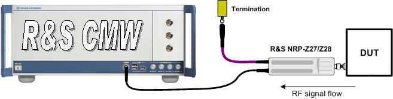
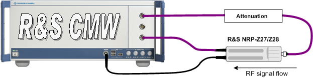

Sensor Connection and Test Setup
The external power sensor is connected to the SENSOR connector at the front panel of the R&S CMW. If the sensor measures an external signal, no extra RF connection with the R&S CMW is needed.

Test setup for external power sensor measurement on a DUT
An external power sensor can also be used to monitor the RF power at a particular point in the test setup. Example: Determine an attenuation in the test setup and "calibrate" the RF source. Moreover, it is possible to feed the sensor output signal back to the R&S CMW, for example for an additional power measurement.

Test setup for external power sensor measurement power calibration
The R&S CMW supports the following sensor types:
- R&S NRP-Z27
- R&S NRP-Z28
Refer to the relevant documentation for information about the sensor properties.